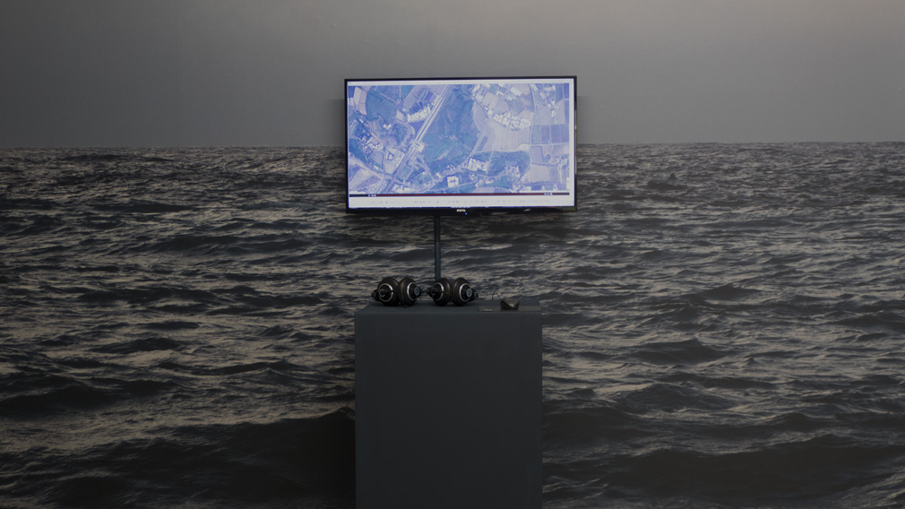

時間
2021/09/04 - 2021/11/28
地點
三樓3B
十年的聲音碎片 — 聲音有著一種隱性潛伏流動的力量，它能激發／構成空間與事件，也是個人內心生活與情感以及世界的思維和意識的基本組成部份。透過聆聽，喚起記憶的碎片並再一次的重組它。傾聽生活所在之處，平凡的生活聲景，層疊另一種未來考古學。台灣聲音地圖計畫於2011年10月開始執行，十年來斷續的移動在臺灣各地進行聲音記錄，透過聲音地圖網站介面，瀏覽與聆聽這塊土地上生活環境多樣的聲音狀態，而此計畫也將於2021年12月結束斷點。將十年的聲音資料庫以切片式的時間型態階段性呈現，透過聲音-影像的試驗，讓聲音拓衍我們的感知與身體。